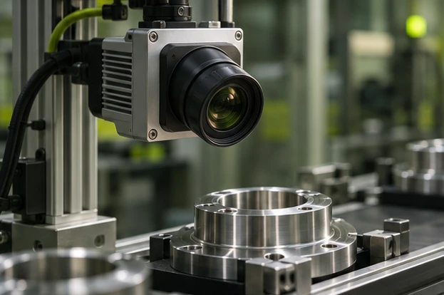
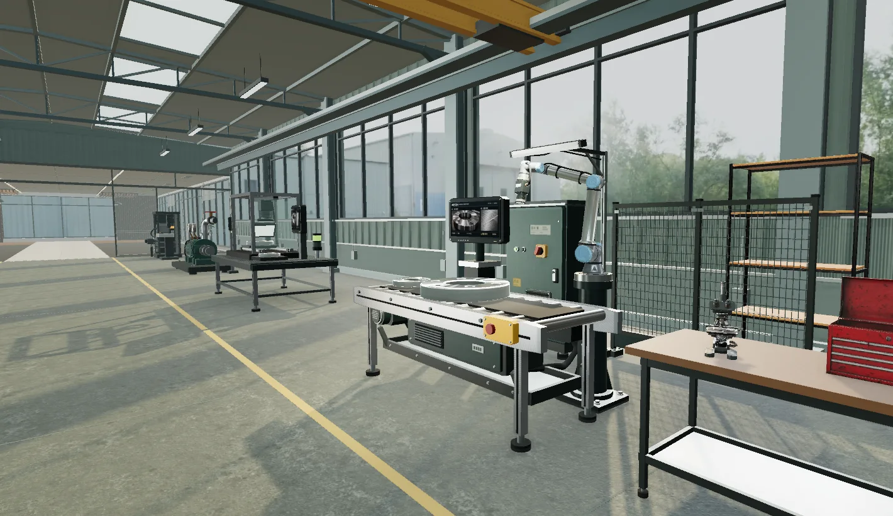

제조동/검사 셀
자동 안내/1인칭 현장 재현
이 부품, 출하해도 될까요?
품질 담당자가 보여 준 플랜지에서 시작합니다. 현장의 말을 LLM이 검사 기준으로 정리합니다.
드래그로 시선 이동 · WASD 또는 방향키로 걷기
00:00/00:56자동 이동
INDUSTRIAL INTELLIGENCE
MES와 DCS에
딥러닝 두뇌를 더합니다.
MES의 생산 이력과 DCS의 공정 신호를 함께 보면, 어느 로트에서 어떤 설비 변화가 품질 이상에 앞섰는지 추적할 수 있습니다.
MES
작업지시 · 로트 · 검사 결과
DCS
설정값 · 압력 · 유량 · 온도
ZIEWCORE
패턴을 학습하는 딥러닝
시각·설비·로트를 맞춰 정상 패턴과 달라진 구간을 찾습니다.
현장 담당자
어디를 먼저 점검할지 결정
검사 영상과 공정 신호를 확인해 재검·정비를 요청합니다.
연동 설계 예시입니다. 제어 설정 변경은 현장의 기존 권한과 승인 절차를 따릅니다.
MES·DCS 기술 해설 듣기INDUSTRY APPLICATIONS
우리 현장에서는 어떻게 쓰일까요?
고객이 겪는 문제부터 도입 후 달라지는 일까지,
여섯 가지 솔루션의 적용 흐름을 살펴보세요.
ENTERPRISE AUTOMATION
읽고 판단하는 로컬 LLM,
승인된 일을 실행하는 RPA.
고객사 사내 서버의 로컬 LLM이 권한 있는 업무 자료를 읽고 초안을 만듭니다. 담당자가 승인하면 RPA가 ERP·CRM·그룹웨어에 입력합니다.
RETURN ON INVESTMENT
우리 팀의 도입 효과는?
예시 조건을 현장 측정값으로 바꿔 보세요. 검토와 예외 처리에 남는 시간까지 도입 후 작업시간에 포함합니다.
계산 조건
금액 단위는 각 입력란에 표시됩니다.
월 확보 업무시간266.7시간
월간 시간 가치800만원
운영비 차감 후 월 가치600만원
첫해 순효익4,200만원
첫해 투자수익률77.8%
단순 회수기간5개월
계산식과 가정 보기
월 확보시간은 월 처리량 × (도입 전 분 − 도입 후 분) ÷ 60입니다. 월간 시간 가치는 이 시간에 시간당 인건비를 곱합니다.
첫해 순효익은 12 × (월간 시간 가치 − 월 운영비) − 초기 도입비입니다. 첫해 ROI는 순효익 ÷ (초기 도입비 + 12개월 운영비) × 100입니다. 단순 회수기간은 초기 도입비 ÷ 운영비 차감 후 월 가치로 계산합니다.
정상 운영 개시일부터 12개월간 처리량이 일정하다고 가정합니다. 초기 비용에는 구축·연동비를, 운영비에는 사내 서버·전력·RPA 라이선스·유지보수를 포함하세요.
위 금액은 확보된 업무시간을 환산한 예시입니다. 실제 현금 절감은 초과근무비·외주비 등에서 확인된 지출 변화를 별도로 측정합니다.
ABOUT ZIEWISE
현장 운영에서 출발한
AI 설계 파트너
지와이즈는 서버 호스팅과 가상 PC, 스마트 CCTV, 출력 보안 현장에서 인프라를 구축하고 운영해 왔습니다. 그 경험을 담은 엣지 AI 운영 플랫폼 ZiewCore는 데이터 수집부터 재학습, 모델 배포, 현장 추론까지 연결합니다.
ISO/IEC 27001:2022 인증
데이터센터의 서버 호스팅 및 가상 PC 운영서비스에 대한 정보보호 관리체계 인증입니다. 한국품질재단 발급, 유효기간 2024.09.24 – 2027.09.23.
인증서 보기 (새 창)혁신성장유형 벤처기업
벤처기업확인기관이 혁신성장유형으로 확인했습니다. 유효기간은 2025.08.26 – 2028.08.25입니다.
확인서 보기 (새 창)연구개발전담부서 운영
한국산업기술진흥협회 인정 연구개발전담부서를 운영합니다. 인정서 번호는 제2024154736호입니다.
인정서 보기 (새 창)CONTACT
어떤 과제를 함께 풀어볼까요?
보유한 데이터와 현장 조건을 알려주시면 도입 방향을 함께 검토합니다.